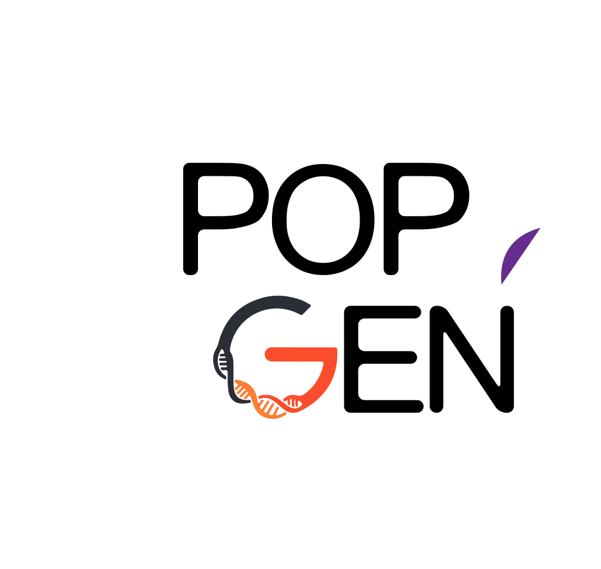

Le projet en chiffres
Pourquoi c'est urgent
des individus présents dans les grandes bases génomiques mondiales sont d'origine européenne — les populations admixées restent donc moins bien documentées.
Bases de fréquences · panels de référence · outils d'interprétation
-
Posologie
Les bases internationales documentent encore insuffisamment les profils pharmacogénétiques des populations admixées de l'océan Indien. Ce manque limite la lecture fine des variations locales.
-
Diagnostic
Sans base locale de fréquences de variants, un variant peut être classé comme rare ou incertain alors qu'il correspond simplement à la diversité propre de la population réunionnaise.
-
Prévention
Les modèles construits sur d'autres populations peuvent perdre en précision lorsqu'ils sont appliqués à une population fortement admixée et fondatrice.
Ce que ça change
Une base locale pour mieux comparer.
-
Une base locale de fréquences de variants
Documenter les variants observés à La Réunion et leur fréquence, afin de disposer d'un point de comparaison propre au territoire.
-
Un référentiel génomique réunionnais
Apporter aux équipes un référentiel local pour relire les résultats génétiques dans le contexte démographique et historique réunionnais.
-
Une ressource pour la recherche
Fournir une base scientifique pour étudier l'admixture, les effets fondateurs et les limites des outils génomiques actuels.
Une richesse unique au monde
La Réunion, carrefour génétique.
Façonnée par l'Afrique, Madagascar, l'Inde du Sud, l'Europe et la Chine, la population réunionnaise porte une diversité génétique exceptionnelle. Chaque personne est une combinaison unique d'héritages. C'est précisément cette richesse que Génome Réunion met en lumière.
Valeurs illustratives
Comment ça marche
Trois étapes, un référentiel local.
-
Étape 01
Cartographier la diversité génétique
2 500 volontaires réunionnais sont génotypés par puce SNP afin de décrire la structure génétique de la cohorte et ses principales composantes.
-
Étape 02
Documenter le phasage familial
100 familles nucléaires permettent de consolider le phasage haplotypique et de mieux suivre la transmission des segments génétiques.
-
Étape 03
Sélectionner les génomes complets WGS
350 génomes complets WGS sont sélectionnés à partir des données SNP pour représenter au mieux la diversité géographique et génétique de La Réunion.
Ce que ça permet
Quatre modules d'aide à l'analyse.
-
01
Interprétation des variants
Aider à distinguer les variants potentiellement importants de ceux qui sont simplement fréquents dans la population réunionnaise.
-
02
Pharmacogénétique populationnelle
Mieux connaître les profils génétiques susceptibles d'influencer les analyses pharmacogénétiques futures.
-
03
Structure d'admixture
Décrire la mosaïque d'héritages qui structure la population réunionnaise : Afrique, Madagascar, Inde du Sud, Europe et Asie.
-
04
Évaluation des scores génétiques
Tester la pertinence des scores génétiques dans une population admixée avant toute interprétation locale.
Un projet collectif
Génome Réunion, une équipe locale.
Porté par le Service de Génétique Moléculaire du CHU de La Réunion, avec le soutien de partenaires locaux et nationaux.
-
BDPr Bérénice DorayChef de service · Génétique médicale
-
PMPatrick MunierPorteur · Initiateur et coordinateur · Génétique des populations
-
THDr Thomas HubyCo-porteur scientifique · Coordinateur
-
SGSusie GuillyIngénieure de recherche
-
FFDr Fanny FerroulGénétique médicale
Partenaires
-

- Université de La Réunion
- Région Réunion
-

- CRB
Construisons ensemble notre référence.
Chaque participant contribue à bâtir la première ressource génomique réunionnaise. Pour vous, vos enfants, et toute La Réunion.
Je veux participer